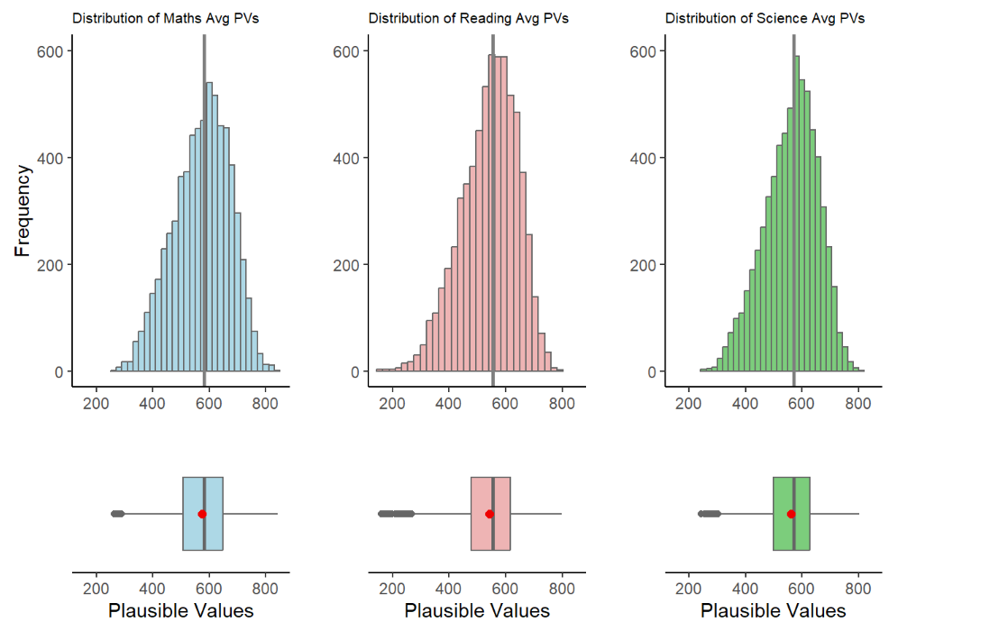
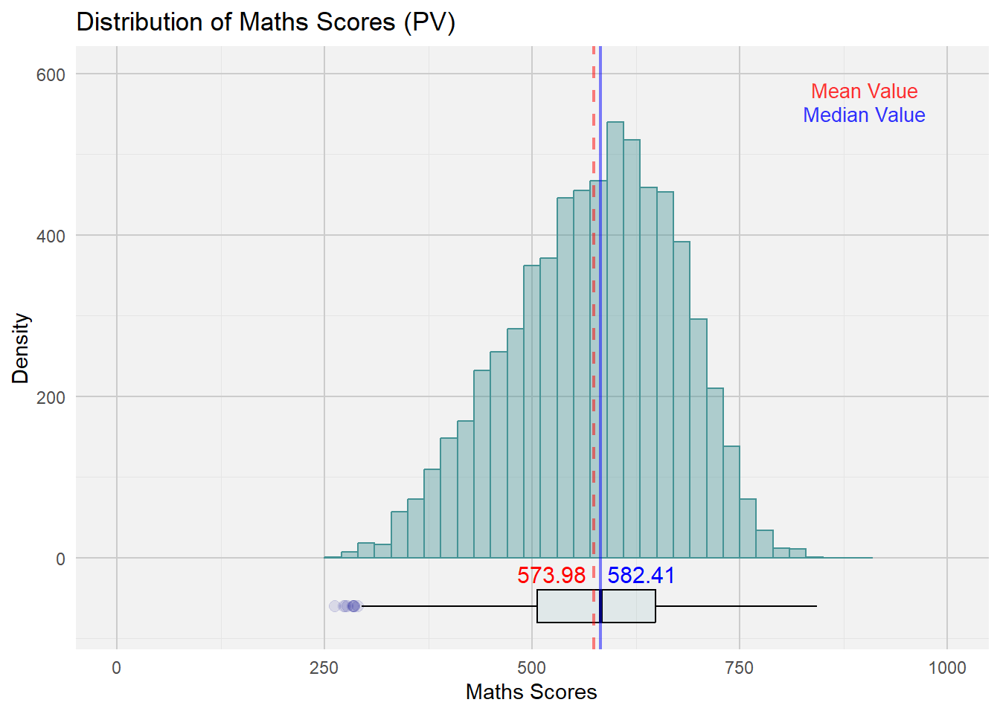
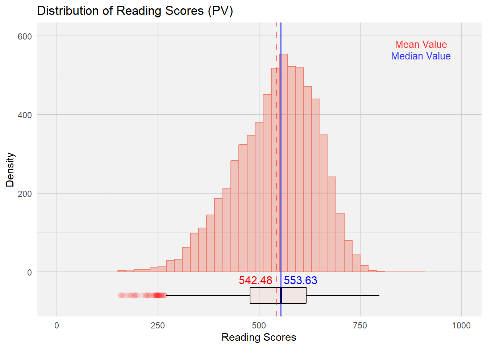
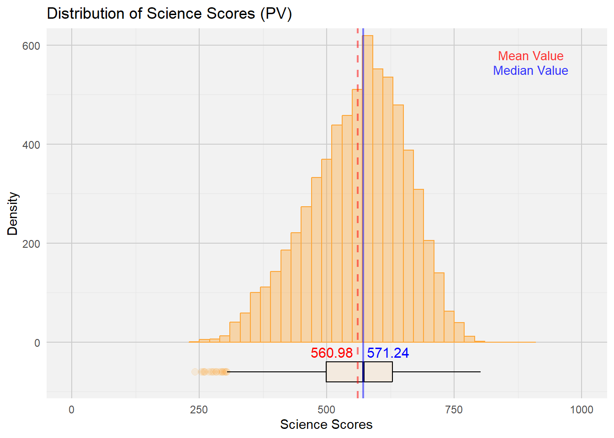
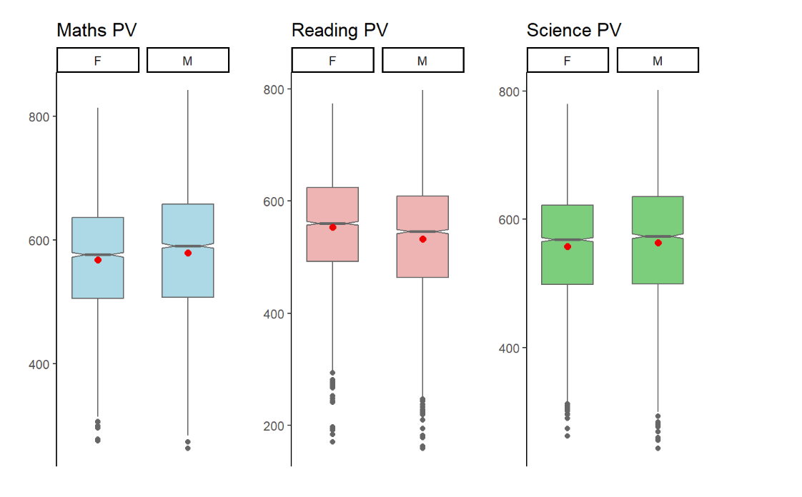
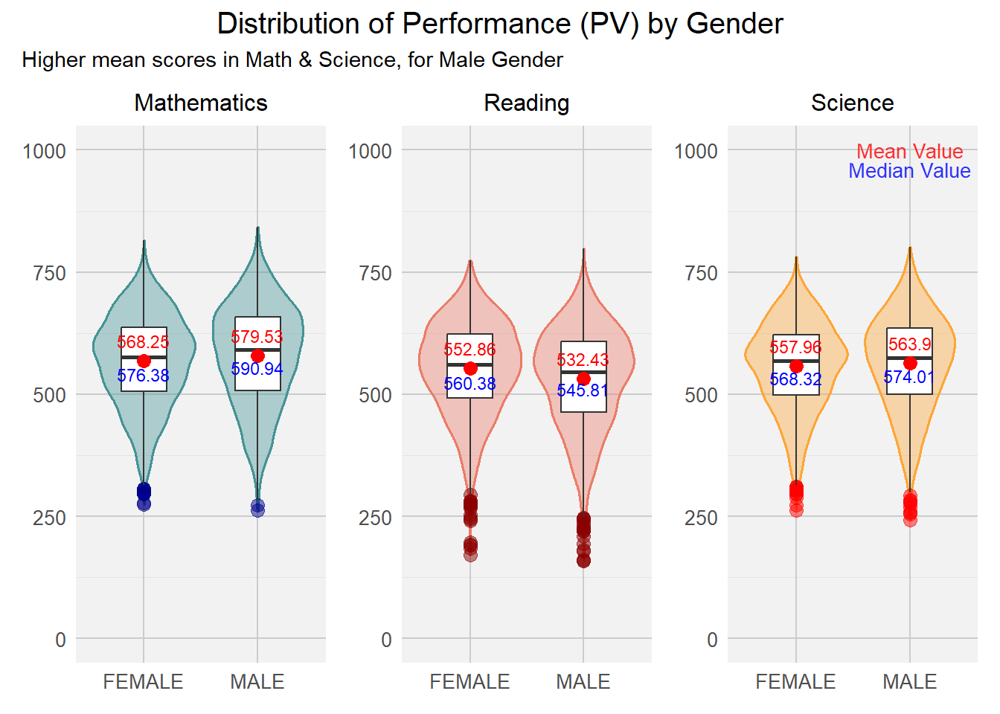

Code
pacman::p_load(tidyverse, haven, dplyr, plyr, ggrepel, ggthemes, knitr, kableExtra, intsvy, hrbrthemes, ggridges, ggdist, patchwork, colorspace, reshape2, scales, ggplot2, ggpol, gridExtra)FirGhaz
January 27, 2024
This document serves as a submission for Take-home Exercise 2 as required by the course ISSS608 Visual Analytics and Applications.
In this exercise, we aim to apply the different data visualization design practices and principles and improve on the Take-home Exercise 1 output of a fellow classmate. Context for Exercise 1 as shown below.
Task Context OECD education director Andreas Schleicher shared in a BBC article that “Singapore managed to achieve excellence without wide differences between children from wealthy and disadvantaged families.” (2016) Furthermore, several Singapore’s Minister for Education also started an “every school a good school” slogan. The general public, however, strongly believes that there are still disparities that exist, especially between the elite schools and neighborhood school, between students from families with higher socioeconomic status and those with relatively lower socioeconomic status and immigration and non-immigration families**.
Task 1 Objectives The exercise task take-home exercise 1 are: to use appropriate Exploratory Data Analysis (EDA) methods and ggplot2 functions to reveal (1) Singapore students’ performance in mathematics, reading, and science and (2) relationship between these performances with schools, gender and socioeconomic status (SES) of the students.
Importing data set and filtering data from Singapore Students only.
# A tibble: 5 × 1,279
CNT CNTRYID CNTSCHID CNTSTUID CYC NatCen STRATUM SUBNATIO REGION OECD
<chr> <dbl> <dbl> <dbl> <chr> <chr> <chr> <chr> <dbl> <dbl>
1 SGP 702 70200052 70200001 08MS 070200 SGP01 7020000 70200 0
2 SGP 702 70200134 70200002 08MS 070200 SGP01 7020000 70200 0
3 SGP 702 70200112 70200003 08MS 070200 SGP01 7020000 70200 0
4 SGP 702 70200004 70200004 08MS 070200 SGP01 7020000 70200 0
5 SGP 702 70200152 70200005 08MS 070200 SGP01 7020000 70200 0
# ℹ 1,269 more variables: ADMINMODE <dbl>, LANGTEST_QQQ <dbl>,
# LANGTEST_COG <dbl>, LANGTEST_PAQ <dbl>, Option_CT <dbl>, Option_FL <dbl>,
# Option_ICTQ <dbl>, Option_WBQ <dbl>, Option_PQ <dbl>, Option_TQ <dbl>,
# Option_UH <dbl>, BOOKID <dbl>, ST001D01T <dbl>, ST003D02T <dbl>,
# ST003D03T <dbl>, ST004D01T <dbl>, ST250Q01JA <dbl>, ST250Q02JA <dbl>,
# ST250Q03JA <dbl>, ST250Q04JA <dbl>, ST250Q05JA <dbl>, ST250D06JA <chr>,
# ST250D07JA <chr>, ST251Q01JA <dbl>, ST251Q02JA <dbl>, ST251Q03JA <dbl>, …stu_qqq_SG_selectedV <- stu_qqq_SG %>% select(CNTSTUID, STRATUM, ST004D01T, IMMIG, ESCS,PV1READ:PV10READ, PV1SCIE:PV10SCIE, PV1MATH:PV10MATH)
stu_qqq_SG_selectedV<- stu_qqq_SG_selectedV %>% mutate(CNTSTUID = as.character(CNTSTUID))
names(stu_qqq_SG_selectedV)[names(stu_qqq_SG_selectedV) == 'CNTSTUID'] <- 'STUDENT ID'
names(stu_qqq_SG_selectedV)[names(stu_qqq_SG_selectedV) == 'ST004D01T'] <- 'GENDER'
stu_qqq_SG_selectedV <- stu_qqq_SG_selectedV %>%
mutate(GENDER = recode(as.character(GENDER), '1' = 'FEMALE', '2' = 'MALE'))
stu_qqq_SG_selectedV <- stu_qqq_SG_selectedV %>%
mutate(STRATUM = recode(STRATUM, 'SGP01' = 'MAINSTREAM SCH', 'SGP03' = 'PRIVATE SCH'))
stu_qqq_SG_selectedV<- stu_qqq_SG_selectedV %>%
mutate(IMMIG = recode(IMMIG, '1' = 'NATIVE', '2' = '2ND GEN', '3' = '1ST GEN'))The first example we look at a visualisation example of Average PV values across frequency below:

Intended Viz’s Proposition
In this visualisation, the author created a Histogram with a Box plot to show the Average PVs versus Frequency across 3 subjects. It was a good attempt to show the readers the distribution skews, the statistical mean (with the red dot) and, possibly the outliers’ stretch to determine min|max range within each subjects.
To achieve the balance between aesthetics and clarity a few enhancements can be made:
To view the skewness of the distribution with accuracy, we must maintain the aspect ratio of the plots produced. This implies that patchwork function is not recommended as it will compress the aspect ratio making the scale of the axes inaccurate.
The X Axis should be represented accurate as the Average of PVs in each subject. while the Y Axis should be the score
We can also explore to include the Statistical Summary of Mean and Median values and the lines corresponding to it and input a legend on the top right for quick reference.
Bin width was selected at 20. This allows the balance of appeal (avoiding too many vertical lines) while still balancing the clarity of the shape of the distribution shown.
The Grid panels, major and minor lines were designed to be subtle-ly more apparent so that it can provide quick reference to x/y axis for the various bins
Both axes to start from ‘0’ to give an accurate representation of each bin.
The fill colour of the Histogram bins were made with high transparent fill effect, this is to allow easier reference of all the major and minor grid lines for x and y axes.
stu_qqq_SG_selectedV <- stu_qqq_SG_selectedV %>%
mutate(Maths = rowSums(stu_qqq_SG_selectedV[paste0('PV', c(1:10), "MATH")],
na.rm = TRUE)/10) %>%
mutate(Reading =
rowSums(stu_qqq_SG[paste0('PV', c(1:10), "READ")],
na.rm = TRUE)/10) %>%
mutate(Science =
rowSums(stu_qqq_SG[paste0('PV', c(1:10), "SCIE")],
na.rm = TRUE)/10)
# Maths Histogram and Boxplot with Mean and Median
maths_plot <- ggplot(stu_qqq_SG_selectedV, aes(x = Maths)) +
geom_histogram(color = "#459395", binwidth = 20, fill = "#459395", alpha = 0.4) + coord_cartesian(xlim = c(0,1000), ylim = c(-80,600)) +
geom_boxplot(width = 40, position = position_nudge(y = -60), outlier.shape = 20, outlier.size = 4, outlier.color = "darkblue", fill = "#459395", color = "#000000", alpha = 0.1) +
geom_vline(aes(xintercept = mean(Maths, na.rm = TRUE)), linetype = "dashed", color = "red", size = 0.8, alpha = 0.5) +
annotate("text", x = mean(stu_qqq_SG_selectedV$Maths, na.rm = TRUE) + 20, y = -20, label = paste(round(mean(stu_qqq_SG_selectedV$Maths, na.rm = TRUE), 2)), color = "red", size = 4, angle = 0, hjust = 1.35) +
geom_vline(aes(xintercept = median(Maths, na.rm = TRUE)), linetype = "solid", color = "blue", size = 0.8, alpha = 0.5) +
annotate("text", x = median(stu_qqq_SG_selectedV$Maths, na.rm = TRUE) + 20, y = -20, label = paste(round(median(stu_qqq_SG_selectedV$Maths, na.rm = TRUE), 2)), color = "blue", size = 4, angle = 0, hjust = 0.15) +
labs(title = "Distribution of Maths Scores (PV)", x = "Maths Scores", y = "Density") +
theme_minimal()
maths_plot <- maths_plot +
theme(panel.background = element_rect(fill = "grey95", color = NA),
panel.grid.major = element_line(color = "grey80", size = 0.5),
panel.grid.minor = element_line(color = "grey90", size = 0.25)) +
annotate("text", x = 900, y = 580, label = "Mean Value", color = "red", size = 3.5, alpha = 0.8) +
annotate("text", x = 900, y = 550, label = "Median Value", color = "blue", size = 3.5, alpha = 0.8)
print(maths_plot)
reading_plot <- ggplot(stu_qqq_SG_selectedV, aes(x = Reading)) +
geom_histogram(color = "#EB7C69", binwidth = 20, fill = "#EB7C69", alpha = 0.4) + coord_cartesian(xlim = c(0,1000), ylim = c(-80,600)) +
geom_boxplot(width = 40, position = position_nudge(y = -60), outlier.shape = 20, outlier.size = 4, outlier.color = "red", fill = "#EB7C69", color = "#000000", alpha = 0.1) +
geom_vline(aes(xintercept = mean(Reading, na.rm = TRUE)), linetype = "dashed", color = "red", size = 0.8, alpha = 0.5) +
annotate("text", x = mean(stu_qqq_SG_selectedV$Reading, na.rm = TRUE) + 20, y = -20, label = paste(round(mean(stu_qqq_SG_selectedV$Reading, na.rm = TRUE), 2)), color = "red", size = 4, angle = 0, hjust = 1.35) +
geom_vline(aes(xintercept = median(Reading, na.rm = TRUE)), linetype = "solid", color = "blue", size = 0.8, alpha = 0.5) +
annotate("text", x = median(stu_qqq_SG_selectedV$Reading, na.rm = TRUE) + 20, y = -20, label = paste(round(median(stu_qqq_SG_selectedV$Reading, na.rm = TRUE), 2)), color = "blue", size = 4, angle = 0, hjust = 0.15) +
labs(title = "Distribution of Reading Scores (PV)", x = "Reading Scores", y = "Density") +
theme_minimal()
reading_plot <- reading_plot +
theme(panel.background = element_rect(fill = "grey95", color = NA),
panel.grid.major = element_line(color = "grey80", size = 0.5),
panel.grid.minor = element_line(color = "grey90", size = 0.25)) +
annotate("text", x = 900, y = 580, label = "Mean Value", color = "red", size = 3.5, alpha = 0.8) +
annotate("text", x = 900, y = 550, label = "Median Value", color = "blue", size = 3.5, alpha = 0.8)
print(reading_plot)
science_plot <- ggplot(stu_qqq_SG_selectedV, aes(x = Science)) +
geom_histogram(color = "#FDA638", binwidth = 20, fill = "#FDA638", alpha = 0.4) + coord_cartesian(xlim = c(0,1000), ylim = c(-80,600)) +
geom_boxplot(width = 40, position = position_nudge(y = -60), outlier.shape = 20, outlier.size = 4, outlier.color = "darkorange", fill = "#FDA638", color = "#000000", alpha = 0.1) +
geom_vline(aes(xintercept = mean(Science, na.rm = TRUE)), linetype = "dashed", color = "red", size = 0.8, alpha = 0.5) +
annotate("text", x = mean(stu_qqq_SG_selectedV$Science, na.rm = TRUE) + 20, y = -20, label = paste(round(mean(stu_qqq_SG_selectedV$Science, na.rm = TRUE), 2)), color = "red", size = 4, angle = 0, hjust = 1.35) +
geom_vline(aes(xintercept = median(Science, na.rm = TRUE)), linetype = "solid", color = "blue", size = 0.8, alpha = 0.5) +
annotate("text", x = median(stu_qqq_SG_selectedV$Science, na.rm = TRUE) + 20, y = -20, label = paste(round(median(stu_qqq_SG_selectedV$Science, na.rm = TRUE), 2)), color = "blue", size = 4, angle = 0, hjust = 0.15) +
labs(title = "Distribution of Science Scores (PV)", x = "Science Scores", y = "Density") +
theme_minimal()
science_plot <- science_plot +
theme(panel.background = element_rect(fill = "grey95", color = NA),
panel.grid.major = element_line(color = "grey80", size = 0.5),
panel.grid.minor = element_line(color = "grey90", size = 0.25)) +
annotate("text", x = 900, y = 580, label = "Mean Value", color = "red", size = 3.5, alpha = 0.8) +
annotate("text", x = 900, y = 550, label = "Median Value", color = "blue", size = 3.5, alpha = 0.8)
print(science_plot)
Next, we look at a visualisation example of Distribution of Student Performances by Gender:
 Intended Viz’s Proposition
In this visualisation, the author created boxplots to show the Reading PVs across 3 subjects by Gender.
To achieve the balance between aesthetics and clarity these enhancements can be made:
Y axis must be accurately represented across all subjects. This will give a more coherent representation of the means and stats median across the 3 subjects.
We can also explore to include the Statistical Summary of Mean and Median values and the lines corresponding to it and input a legend on the top right for quick reference.
A violin plot can be utilised in the background to give a sense of the distribution and range of the performance within each gender and subject domains.
The Grid panels, major and minor lines were designed to be subtle-ly more apparent so that it can provide quick reference to x/y axis for the various bins
Both axes to start from ‘0’ to give an accurate representation of each bin.
The fill colour of the Histogram bins were made with high transparent fill effect, this is to allow easier reference of all the major and minor grid lines for x and y axes.
P7 <- ggplot(data= stu_qqq_SG_selectedV,
aes(x= GENDER, y= Maths)) +
geom_violin(color = "#459395", size = 0.6, fill= "#459395", alpha = 0.4) +
geom_boxplot(width= 0.4, outlier.colour = "grey30", outlier.size = 3, outlier.color = "darkblue",
outlier.alpha = 0.5, outlier.shape = 19) +
stat_summary(geom = "point",
fun ="mean",
colour ="red",
size=3) + coord_cartesian(ylim = c(0,1000)) +
scale_color_manual(values=c("#999999", "#E69F00")) +
theme_minimal() +
labs(title="Mathematics") +
theme(panel.background = element_rect(fill = "grey95", color = NA),
panel.grid.major = element_line(color = "grey80", size = 0.5),
panel.grid.minor = element_line(color = "grey90", size = 0.25),
axis.title.x = element_blank(),
axis.title.y = element_blank(),
plot.title = element_text(size = 12, hjust = 0.5),
axis.text = element_text(size = 10))
P7 <- P7 +
stat_summary(aes(label = round(..y.., 2)), geom = "text", fun = mean,
vjust = -1.0, color = "red", size = 3) +
stat_summary(aes(label = round(..y.., 2)), geom = "text", fun = median,
vjust = 1.8, color = "blue", size = 3)
P8 <- ggplot(data= stu_qqq_SG_selectedV,
aes(x= GENDER, y= Reading)) +
geom_violin(color = "#EB7C69", size = 0.6, fill= "#EB7C69", alpha = 0.4) +
geom_boxplot(width= 0.4, outlier.colour = "grey30", outlier.size = 3, outlier.color = "darkred",
outlier.alpha = 0.5, outlier.shape = 19) +
stat_summary(geom = "point",
fun ="mean",
colour ="red",
size=3) + coord_cartesian(ylim = c(0,1000)) +
theme_minimal() +
labs(title="Reading") +
theme(panel.background = element_rect(fill = "grey95", color = NA),
panel.grid.major = element_line(color = "grey80", size = 0.5),
panel.grid.minor = element_line(color = "grey90", size = 0.25),
axis.title.x = element_blank(),
axis.title.y = element_blank(),
plot.title = element_text(size = 12, hjust = 0.5),
axis.text = element_text(size = 10))
P8 <- P8 +
stat_summary(aes(label = round(..y.., 2)), geom = "text", fun = mean,
vjust = -1.0, color = "red", size = 3) +
stat_summary(aes(label = round(..y.., 2)), geom = "text", fun = median,
vjust = 1.8, color = "blue", size = 3)
P9 <- ggplot(data= stu_qqq_SG_selectedV,
aes(x= GENDER, y= Science)) +
geom_violin(color = "#FDA638", size = 0.6, fill= "#FDA638", alpha = 0.4) +
geom_boxplot(width= 0.4, outlier.colour = "grey30", outlier.size = 3, outlier.color = "red",
outlier.alpha = 0.5, outlier.shape = 19) +
stat_summary(geom = "point",
fun ="mean",
colour ="red",
size=3) + coord_cartesian(ylim = c(0,1000)) +
theme_minimal() +
labs(title="Science") +
theme(panel.background = element_rect(fill = "grey95", color = NA),
panel.grid.major = element_line(color = "grey80", size = 0.5),
panel.grid.minor = element_line(color = "grey90", size = 0.25),
axis.title.x = element_blank(),
axis.title.y = element_blank(),
plot.title = element_text(size = 12, hjust = 0.5),
axis.text = element_text(size = 10))
P9 <- P9 +
stat_summary(aes(label = round(..y.., 2)), geom = "text", fun = mean,
vjust = -1.0, color = "red", size = 3) +
stat_summary(aes(label = round(..y.., 2)), geom = "text", fun = median,
vjust = 1.8, color = "blue", size = 3) +
annotate("text", x = 2.0, y = 1000, label = "Mean Value", color = "red", size = 3.5, alpha = 0.8) +
annotate("text", x =2.0, y = 960, label = "Median Value", color = "blue", size = 3.5, alpha = 0.8)
(P7 + P8 + P9) +
plot_annotation(title= "Distribution of Performance (PV) by Gender", subtitle = "Higher mean scores in Math & Science, for Male Gender", theme = theme(plot.title=element_text(size= 15, hjust= 0.5)))
This exercise facilitates my understanding with regards to the importance of balancing aestheticness vs clarity. Utilising the right visualizations is imperative to ensure that the target audience is captivated and well-informed of the insights gained by the data visualisation. Moving ahead, I am looking forward to making interactive visualisation that can garner deeper insights as the target audience fondle more with the visualisation developed.